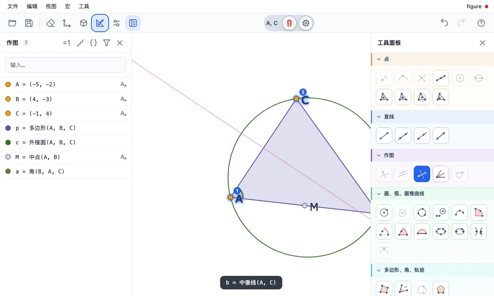
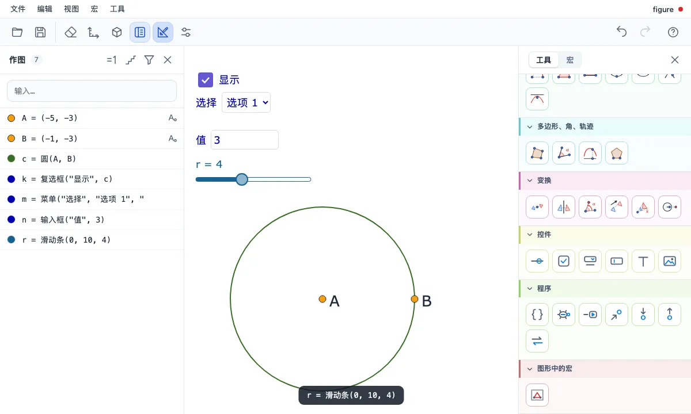

工具面板

打开工具面板
- 操作栏中的，或“视图 › 工具面板”，会在右侧平铺显示全部工具，按工具族分组，颜色与工具环相同，最后是图形中的宏。
- 首次启动时工具面板可见。此后，此浏览器会记住面板的打开或关闭状态，并在下次启动时恢复。
- 它占据属性面板的位置：打开其中一个会关闭另一个，手中的工具不会被放下。
- 在对象上右键单击会打开其属性，取代工具面板；关闭后工具面板恢复。
- 点击工具族标题可将其折叠或展开，DocGeo 会记住。
- Esc 放下工具或清空选择，然后关闭工具面板。
- 在小屏幕上，工具面板会覆盖图形，选择工具后立即关闭。宽度小于 500 px 时，其按钮从操作栏移到输入行右侧。
用工具作图
- 点击工具即可拿起；工具处于按下状态时，再次点击会放下它。
- 工具面板包含工具环的全部工具以及更多工具（下文标有工具环）。“平面”和“立体图形”工具族以及标有3D的工具只在 3D 视图中出现。
- 控件族不在环上，用于放置滑动条、复选框、菜单、输入框、文本和图像。
- 程序类不在工具环中，用于创建海龟、按钮和事件程序（见积木与海龟）。
- 工具面板打开时，点击对象会选中它而不打开工具环，点击空白处则取消选择。不接受该对象或多选的工具会变灰。
- 工具面板打开且未选工具时，图形只能被操作：点击空白处或交叉处不会创建点。要创建点，请选择工具面板中的第一个工具点。
- 指针悬停在工具上时，提示中显示它的那一行。若所选对象已足够，它将创建的对象会以浅色显示。
- 第一个选中的对象可以占据其类型允许的任何位置：作垂线时，直线可以先于点选择。
- 也可以在“作图”面板中选择参数：工具接受的对象所在的行以绿色突出显示，其他行变淡。隐藏的对象也可以在这里选择。在这里只能选择已有的点，两个对象给出它们的全部交点。工具处于使用状态时，点击某一行不会修改它。已选择的行变为蓝色，并显示它在命令中的位置（1、2…）。
- 工具是持续的：每完成一个对象，它都会重新等待第一个参数。它的按钮保持按下，工具栏显示一条带有完成的横幅。
- 按住 Shift 选择的参数会被保留：每完成一个对象，工具都会再次采用它，直到退出工具。按住 Shift 单击对称轴，再逐个单击要变换的对象；同心圆的圆心也是如此。提示栏中的保留 d按钮作用相同（例如用手指时）；更换 d会重新要求选择它。工具环中的工具以及在选工具之前已选中的对象不适用。
- 退出：完成、Esc、提示中的✕、再次点击该工具、橡皮擦、逐步构造，或在输入行中点击。撤销、重做、属性和 3D 视图会保留当前工具。
先选择对象
先选择的对象成为所选工具的参数：见用多选作图。
变换对象
- 变换先选取确定它的对象（中心、对称轴、向量、圆），再选取要变换的点或对象：线段、直线、射线、向量、多边形、圆、圆弧、圆锥曲线、函数图像、轨迹；在 3D 中还可以是平面、球、多面体（反演除外）。
- 指针下优先选点，其次是对象；在空白处则创建一个点。悬停时，像以浅色显示。
- 像与对象属于同一类：多边形的像是多边形，圆的像是圆……函数图像、轨迹或圆锥曲线的弧的像是轨迹。
- 在反演下，直线或圆的像是圆，若经过反演中心则是直线；多边形的像是边为曲线的多边形。
- 像沿用其对象的颜色、填充、大小、不透明度和虚线。像不能拖动，但可以在上面放置点。
- 要变换多个对象，按住 Shift 选择中心或对称轴（保留的参数）。
全部工具
每个工具：需要选择什么，以及写出的行。
点
-
点点按的位置：空白处为自由点，在对象上为对象上的点，在两个对象交叉处为交点。
A = (x, y) -
对象上的点工具环一个对象：在点按处创建该对象上的点。点击空白处不起作用。
点(c, t) -
交点工具环点按一次交叉处：得到该点；或依次选择两个对象：得到它们的全部交点，与 GeoGebra 相同（直线与圆有两个交点，即使它们暂时不相交）。也适用于曲线和轨迹。
交点(a, b) -
中点工具环两个点，或一条线段。
中点(A, B) -
圆心工具环一个圆：它的圆心。
圆心(c) -
另一交点两个对象，再选已位于其中一个交点上的点：离它最远的交点。
另一交点(a, b, P) -
内心三个点，三角形的顶点：其内切圆的圆心。
内心(A, B, C) -
重心三个点：三角形的重心。
重心(A, B, C) -
外心三个点：外接圆的圆心。
外心(A, B, C) -
垂心三个点：三角形的垂心。
垂心(A, B, C)
直线
-
线段工具环两个点，即端点。
线段(A, B) -
直线工具环直线上的两个点。
直线(A, B) -
射线工具环两个点：端点，然后射线上的一点。
射线(A, B) -
向量工具环两个点：起点，然后终点。
向量(A, B)
作图
-
垂线工具环一个点和一条直线，顺序任意。3D 中为一条直线或一个平面。
垂线(P, d) -
平行线工具环一个点和一条直线，顺序任意。
平行线(P, d) -
中垂线工具环两个点，或一条线段。
中垂线(A, B) -
角平分线工具环三个点：第一条边上的一点、顶点、第二条边上的一点。
角平分线(A, O, B) -
切线一个点，然后一个圆、一条圆锥曲线或函数图像。工具给出第 1 条切线；在该行中把这个编号改为 2 可得另一条。
切线(P, c, 1)
圆、弧、圆锥曲线
-
圆（圆心和点）工具环圆心，然后圆上的一点。
圆(O, A) -
圆（圆心和半径）工具环只需圆心：在工具环中按住图标，移动鼠标或手指，松开时确定半径。从菜单或工具面板创建时，初始半径约为150像素。之后可拖动圆或编辑其命令行来改变半径。
-
外接圆工具环圆上的三个点。
外接圆(A, B, C) -
圆规两个给出半径的点，然后圆心。
圆规(A, B, O) -
圆（圆心、方向和半径）3D圆心，然后一条直线（轴）或一个平面（与圆平行），包括地面。半径约 150 像素。
圆(O, 3.8, d) -
圆（轴和点）3D一条直线（轴），然后圆上的一点。
圆(d, P) -
圆弧三个点：起点、经过的点、终点（3D 中位于它们所在的平面内）。或一个圆或椭圆，然后起点和终点（逆时针）。
圆弧(A, B, C),圆弧(c, P, Q) -
扇形同圆弧，三个点，或一个圆或椭圆和两个点：它所围成的扇形。
扇形(A, B, C),扇形(c, P, Q) -
圆心弧圆心、起点，然后圆弧终止处射线上的一点（逆时针）。3D 中，为角 AMB 所对的弧，位于其平面内。
圆心弧(M, A, B) -
圆心扇形同
圆心弧：扇形。圆心扇形(M, A, B) -
半圆两个点，直径的端点：位于 [AB] 左侧的半圆。
半圆(A, B) -
圆锥曲线圆锥曲线上的五个点。从第二个点起，预览显示最接近圆的圆锥曲线。
圆锥曲线(A, B, C, D, E) -
椭圆两个焦点，然后椭圆上的一点。
椭圆(F, G, P) -
双曲线两个焦点，然后双曲线上的一点。
双曲线(F, G, P) -
抛物线焦点，然后准线。
抛物线(F, d)
多边形、角、轨迹
-
多边形工具环逐个选择顶点，最后再选第一个顶点以闭合。
多边形(A, B, C) -
角工具环三个点：第一条边上的一点、顶点、第二条边上的一点。
角(A, O, B) -
轨迹工具环一个依赖于对象上的点的点：当该点在其对象上运动时它的轨迹。
轨迹(M, P) -
正多边形两个相邻顶点：工具给出正方形；在其行中修改边数。
正多边形(A, B, 4)
变换
-
中心对称工具环中心，然后要变换的点或对象。
对称(O, P) -
轴对称工具环对称轴，然后要变换的点或对象。
对称(d, P) -
旋转中心，然后点或对象：旋转四分之一圈，可在其行中修改。
旋转(O, P, 90) -
平移向量，然后点或对象。
平移(u, P) -
位似中心，然后点或对象：比为 2，可在其行中修改。
位似(O, P, 2) -
反演反演圆，然后点或对象。
反演(c, P)
平面
-
平面3D三个点，或一个点和一条直线。
平面(A, B, C) -
平行平面3D一个点和一个平面（包括地面）：过该点的平行平面。
平行平面(A, p) -
垂直平面3D一个点和一条直线：垂直于该直线的平面。
垂直平面(A, d)
立体图形
-
球工具环3D球心，然后球面上的一点。在点的工具环中，此工具位于圆工具旁。
球(O, A) -
圆柱3D两个点，轴的两端。半径约 150 像素。
圆柱(A, B, 3.8) -
圆锥3D底面圆心，然后顶点。半径约 150 像素。
圆锥(A, B, 3.8) -
立方体3D同一平面上或同一高度的两个点，否则为三个点（见 3D）。
立方体(A, B, C) -
棱柱3D一个多边形（底面），然后一个点，即对面一个面的顶点。
棱柱(p, P) -
棱锥3D一个多边形（底面），然后顶点。
棱锥(p, S) -
截面3D一个立体图形（球、圆柱、圆锥、多面体）和一个平面，顺序任意。
截面(s, p) -
展开图3D立方体、棱柱或棱锥：它的平面展开图。
展开图(c, 1)
控件

-
滑动条滑动条的位置，从 −5 到 5，步长 0.1。
滑动条(-5, 5, 1) -
复选框它显示的对象（如有，再次点击可移除），然后点击一个空白处：复选框，已勾选。
复选框("显示", a, c) -
菜单菜单的位置，带三个选项，可在其行中改写。它的值是选项的编号。
菜单("选项 1", "选项 2", "选项 3") -
输入框输入框的位置。它保存一个数，公式通过其名称读取。
输入框(1) -
文本文本的位置，可在其定义中改写。
"文本" -
图像一个点或一个空白处，然后选择文件：图像位于该点与其右侧新建的第二个点之间。在 3D 中，第三个点（其左上角）使图像水平放置，并随图形一起旋转。
图像(A, B)
放置控件后会打开其属性；关闭属性后调色板会回来。右键移动控件而不操作它；用手指时，在其属性打开期间按住并拖动即可移动。 图像的这些点决定其大小，并把它与构造相连；如果它们是自由点，拖动图像会同时移动它们。
复选框或菜单通过对象的显示条件起作用：参见 可见条件.
程序
-
新程序在属性中打开一个空程序。
-
海龟一个点，或在空白处新建一个点：从该点出发的海龟，以积木打开。
TURTLE_INIT("A", A) -
按钮其箭头的位置：按钮，其程序以积木打开。
按钮("运行") -
当对象被拖动一个可拖动的点：拖动它时运行的程序，以积木打开。
-
当对象被按下一个可拖动的点：按下它时运行的程序，以积木打开。
-
当对象被松开一个可拖动的点：松开它时运行的程序，以积木打开。
-
当值改变一个表达式：其值改变时运行的程序，以积木打开。
宏
-
新建宏所选对象作为前几个初始对象：定义一个宏；图形中的宏排在其后（见宏）。
变换作出点或对象的像（见变换对象）。只能用键盘输入的：定点、顶点、滑动条、列表、空间中的交点、椭圆(F, G, a)和 双曲线(F, G, a)（见命令）。